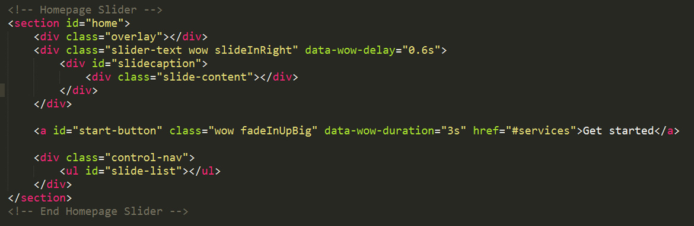

The first div contains the loader for the website. There is a section for each slide of the website. In the end, there is a short section for the footer. Here is the general structure.
This websites is build on the Bootstrap 3 grid. Therefore, one of CSS files of the template is bootstrap.css.
The main css file containing all the custom styles is style.css. The second file contains all of the specific stylings for the page. First of all there is a table of contents containing all the sections of the file (left picture). The file is separated into sections as bellow (right picture).
/* ================================================== 1. Basic Styles ===================================================== */ code /* ================================================== 2. Typography ==================================================== */ code /* ================================================== 3. Home Slider ===================================================== */ code /* ================================================== 4. Header ====================================================== */ code /* ================================================== 5. Mobile Navigation ====================================================== */ code
If you would like to edit a specific section of the site, simply find the appropriate label in the CSS file, and then scroll down until you find the appropriate style that needs to be edited.
Likewise, the CSS folder contains the iconic font files and the files which are part of the Javascript plugins I am using (supersized.css, supersized.shutter.css, fancybox/jquery.fancybox.css, animate.css, owl.theme.css, owl.carousel.css).
These are the JS files that are loaded into templates in end of the Body Section. Only Modernizr.js is loaded in Head Section.
This theme imports three types of Javascript files:
These are the rest of the scripts used in the template with their related link for documentation.
This is the HTML syntax for the slider.
You can find the CSS for the slider in the third section of style.css file.
You can find the JS script that affects the slider in the beginning of the script.js file. You can change the default parameters of the slider. Enter the path for images, insert text, a thumb and a URL for a possible link.
For more information I recomand you to read the documentation on Supersized Plugin.
In HTML file, you can easily change the text between the p or the h tags.
You can change the images in the HTML file as well by typing the source of you image files. Exemple: img src="img/portfolio/thumbs/1.jpg"
For social media customization replace the # symbol with the social media link. Exemple: www.twitter.com/username.
In the Contact Folder there is a PHP script (config.php) that you have to custom by changing the default email to your email address.
I've used free stock images from the following sources:
The iconic font I've used is Font Awesome. You can find out more about Font Awesome here.
Once again, thank you so much for purchasing this theme. As I said at the beginning, I'd be glad to help you if you have any questions relating to this theme.
Nick Teodorescu